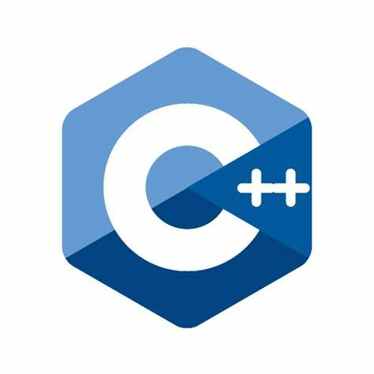
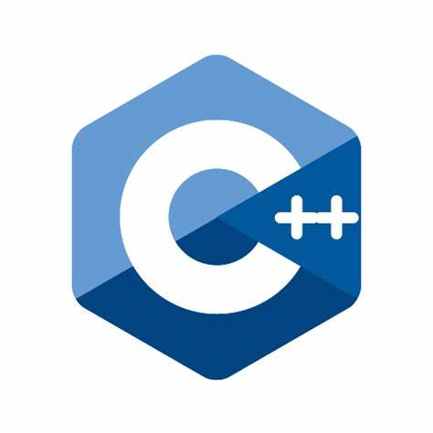

Hello
I'm Frenki Idrizi


Une jam Frenki Idrizi, 20 vjeç dhe aktualisht studioj ne Universitetin Beder. Kam nje pasion te madh per teknologjine dhe programimin, duke zoteruar njohuri ne gjuhe te ndryshme programimi si Java, C#, C++, dhe C.
Ne kohen e lire, me pelqen te lexoj libra per teknologjine, te ndjek zhvillimet me te fundit ne boten e IT-se, dhe te eksploroj projekte open-source.
 


Bachelor ne Shkenca Kompjuterike, duke u fokusuar ne zhvillimin e software-ve dhe programim.
Shkolle profesionale nga e cila mora njohurit baze te programimit
Aplikacioni i librit te telefonit lejon menaxhimin e kontakteve permes nje nderfaqe grafike (GUI) qe perdor MySQL per ruajtjen e te dhenave dhe C# per zhvillimin.
Ky website eshte nje personal portfolio. Ku tregon per mua aftesit e mia ne programim. Disa nga projektet e mia. Ky Projekt eshte krijuar duke perdorur HTML, CSS, JavaScript.Ne kete projekt ndodhet dhe nje blog kur flet per AI